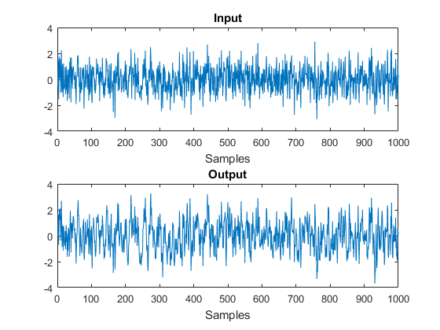

clear all close all clc %%%%%%%%%%%%%%%%%%%%%%%%%%%%%%%%%%%%%%%%%%%% % 1) Model definition and data generation %%%%%%%%%%%%%%%%%%%%%%%%%%%%%%%%%%%%%%%%%%%% % In this exercise we will work with the ARX define as % y(t) = 0.5 y(t-1) + u(t) + e(t) % True value of the parameters: atrue = 0.5; btrue = 1; % We will work with simulated data, hence let's generate the data: % (For a real SysID problem, data are not simulated but they are real, there is no model generating them, they come from the true system) N = 1000; % number of data we want to generate noise_std = 0.1; % Input: we will use a Gaussian signal as input: u = randn(N, 1); % white noise, std = 1 % Outpu: lets compute the output of the model y = zeros(N,1); for t = 2:N % zero initial condition %%%%%%%%%%%%%%%%%%%%%%%%%%%%%%%%%%%%%%%%% %%%%%% Write your code here: %%%%%%%%%%%% e_t = noise_std*randn(1,1); y(t) = atrue*y(t-1) + btrue*u(t) + e_t; end % Lets plot the data (1 output realization) figure(1) subplot(2,1,1) plot(u) title('Input') xlabel('Samples') subplot(2,1,2) plot(y) title('Output') xlabel('Samples') % saving the data save pss8_data_part1 u y